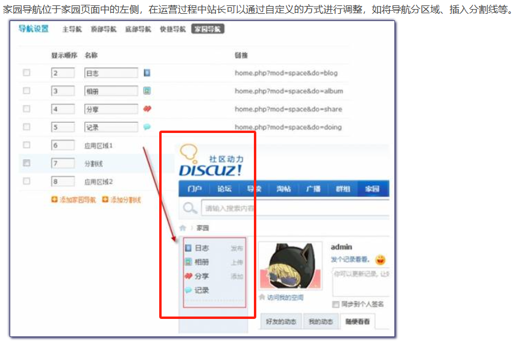
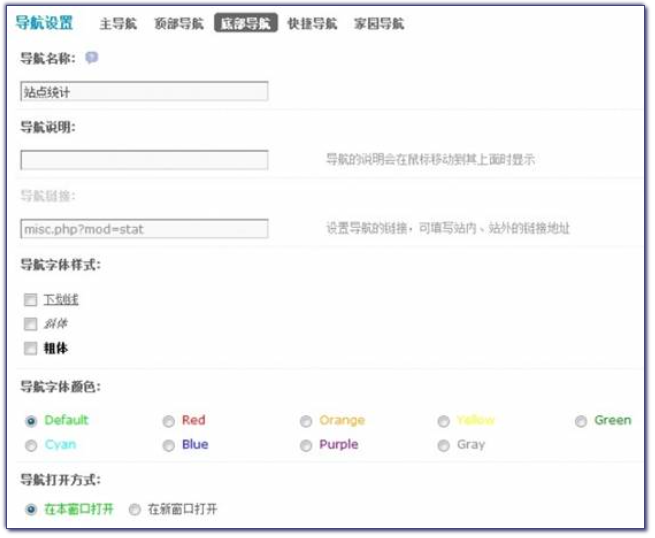
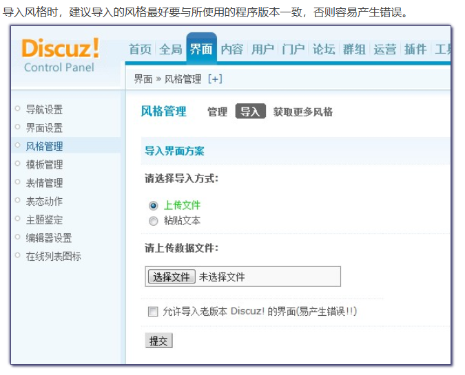

后台管理¶
全局¶
1. 站点信息¶
应用场景：夏夏是一个新手站长，刚刚安装完我们的新版本 Discuz!X 2.5 有好多的疑问：
问题1：她发现安装好后访问站点时，浏览器显示的站点名称，以及页面最下方（我们一般称为footer页面)显示的网站名称和网站访问地址等信息都是官方的，想改为自己的网站信息该怎么操作呢？
问题2：做论坛都是必须要有备案的，备案信息在哪填呢？
问题3：我还想在页面下方加上第三方统计信息，在哪里加呢？
问题4：站点刚安装好，内容都是0 ，我暂时不想让会员注册和访问，想先把版块建好了再开放站点，怎么操作呢？
答案就在这里：往下看
操作路径：【后台】=>【全局】=>【站点信息】中看到如下图所示的页面：
2. 注册与访问控制¶
注册与访问控制，主要是对新用户的注册方式、注册文件以及新用户的访问条件进行一些设置。
1. 注册相关设置：操作路径：【后台】=>【全局】=>【注册与访问控制】=>【注册】
3. 站点功能¶
- 站点功能可以对站点的功能模块门户、群组和家园关闭和开启；管理统计、评价、点评和帖子内容以及活动主题进行一些基本的管理操作，功能包括功能模块、管理相关、主题热度、主题评价、帖子点评、活动主题和其他的一些基本操作。
- 操作路径：【后台】=>【全局】=>【站点功能】
4. 主题热度与评价设置¶
主题热度将按参与人次计算，包括回帖，点评，收藏，分享，评分，推荐；不同用户组会员的主题评价影响值不同，可以配合用户组中的设置进行操作。
5. 帖子点评¶
当有会员发表了一个帖子，你也发表不同的观点，或是赞同、或是反对、或是发表自己的独到见解，阐明自己的观点都可以，就同微博的评论一样好用。被点评过的帖子作者会马上收到通知，点评内容会显示在作者的帖子内容下方，一目了然。
同时当用户对一个帖子的内容感兴趣时，也可以直接在该帖内对其进行点评，使用户之间的交流更加直接，对话题的讨论更加具有针对性，用户与用户之间内容讨论的更加有深度和广度。
1. 点评的开启及显示设置：可以设置点评方式、点评的条目数、是否可以点评楼主帖和自己的帖子、普通主题和特殊主题点评的预置观点，预置观点可以根据自己需要任意填写，每行一个观点。
2. 用户组的点评权限设置：在论坛的全局开启了帖子点评功能后，可以通过对用户组的设置进一步细化点评功能，设置是否允许该用户组中的用户点评帖子，以及对点评帖子的范围进行约束，如仅允许点评楼主帖、回复帖，或允许点评所有帖子等。
3. 点评功能的前台显示
6. 帖子活动和其他设置¶
- 活动主题主要设置活动帖的相关设置，包括活动类别、活动发起者可选的必填活动资料项扩展项数量，用户发起活动时自定义资料项数量的设置、参与消耗积分的活动时使用的积分以及用户列表每页显示参与活动的人数设置。
- 其它设置项里主要包括用户登录的密码加密、登录帐号选择问题，RSS 的相关设置、用户在线时间的相关设置、好友短消息的接收情况、@功能的相关设置及淘帖专辑的共同维护人等的设置。
7. 性能优化¶
性能优化包括论坛页面缓存设置、内存优化和服务器优化。
1. 论坛页面缓存设置
设置页面缓存能够有效的降低服务器的 Mysql 与 CPU 负载，提高站点运行速度。建议在站点的数据量和访问量都比较大的情况下开启该功能。
2. 服务器优化
服务器优化可以对站点的一些参数进行调整，从而均衡服务器的负载。
3. 内存优化
目前支持的内存优化接口有 Memcache、eAccelerator、Alternative PHP Cache(APC)、Xcache、Redis 五种，优化系统将会依据当前服务器环境依次选用接口。
8. 域名设置¶
Discuz! 提供了门户、论坛、群组、家园、频道、专题、论坛版块、论坛分区、个人空间、单个群组以及手机的二级域名绑定功能。
1. 门户、论坛、群组、家园、手机的域名如何绑定
2. 如何开启个人空间与单个群组的二级域名
3. 论坛分区、论坛版块 如何绑定域名
9. 广播设置¶
站点广播是Discuz! X2.5增加的新功能，该功能如同微博里发表话题一样轻松简单，有什么新鲜事想告诉大家，可以直接发布广播。
10. 空间设置¶
通过空间设置可以对空间中的动态保留天数、首页动态显示数、热点推荐的天数范围、首页动态默认标签设置、默认记录提示内容、广播相关的设置等进行一系列基本的设置，同时还可以对新用户默认隐私设置，如：个人空间首页、好友列表、留言板、动态、记录等项的隐私设置。
11. 用户权限¶
用户权限主要包括是否允许查看用户的主题和帖子、是否提示用户自己有未审核的主题或者帖子、帖子最小字数、帖子最大字数等相关用户权限设置和评分设置。
12. 时间设置¶
时间设置包括前台所有的日期和时间格式显示样式，默认日期/时间格式、默认时差、禁止访问时间段、禁止下载附件时间段和禁止全文搜索时间段等相关设置。
13. 水印设置¶
水印功能，主要是为了防止其他地方盗用您站点的图片，另外水印图片设置为自己的网站名称等，可以起到宣传的作用，开启水印功能后，系统会自动为用户上传的 JPG/PNG/GIF 图片附件添加水印，这里包括文章、论坛和空间相册的水印设置。
14. 搜索设置¶
在社区不断积累沉淀的过程中，用户发现往往是愈是专业的社区却不能迅速的找到自己想要的内容而社区价值的挖掘往往需要通过站点主动的推荐和被动的搜索来呈现，主动推送方面我们提供了门户+DIY便于内容更好的展示和管理，同时我们引入了纵横搜索，让搜索变得更加精准、高效、易用。
15. 地区设置¶
站长或者管理员可以自己编辑地区数据、根据所在地区的不同，增加、删除和修改地区名称等。
界面¶
1. 导航设置¶
网站的导航是给用户提供浏览方向及分类指引的重要功能。 正确并适当地设置好网站的导航，可以更好地展示站点的信息，以及帮助用户更快地熟悉站点内的功能及操作。
- 导航类型
Discuz! X2.5 中的导航分为五个部分，分别是主导航、顶部导航、底部导航、快捷导航及家园导航。- 主导航
- 顶部导航
- 底部导航
- 快捷导航
- 家园导航

- 主导航
- 导航的样式设计
对于每一个导航，都可以对其的字体样式、字体颜色、打开方式、导航图标、导航权限等进行设置，设置时，只要点击相应的导航后面的“编辑”选项即可。不同类型的导航可设置的参数各不相同，可在设置时注意区分。

2. 风格管理¶
站长通过风格管理，可以设置论坛的默认风格；也可以调整正在使用中的风格配色，包括页面的颜色、背景等显示；还可以修改字体的大小等；同时还可以导入自己下载下来的风格、导出已有的风格。操作路径：【后台】=>【界面】=>【风格管理】
- 风格管理
- 风格导入
 - 获取更多风格
登录 Discuz! 应用中心。这是 Discuz! X2.5 中推出的模板及插件分享新模式，在这里，广大站长可以方便快捷地获取更多更优秀的开发者们设计的模板风格。
3. 表情管理¶
在论坛交流中，表情可以帮助用户更加生动形象地表达自己的情绪、喜好等。 Discuz! X2.5 中内置了3套表情，站长可以在后台启用或关闭某套表情。还可以对表情执行导出、导入、添加、删除等操作。
4. 表态动作¶
表态动作是日志、图片和文章的访问者表达自身态度的一种途径，通过表态动作，可以使其他阅读者了解被表态内容的质量和趋势，丰富了日志、图片和文章的含义和生动性。
5. 主题鉴定¶
主题鉴定图章可以在帖子主题内显示一个图章，使帖子显示出不同或者特殊性，使得看帖更加具有趣味性，同时还可以在主题列表中显示指定的图标，使帖子更加吸引眼球。
6. 编辑器设置¶
帖子编辑器是所有会员进入到一个论坛中发帖、回帖必用的工具，编辑器的操作是否灵活，用起来是否方便也是可能会影响到论坛帖子质和量的因素之一。
内容¶
1. 内容审核¶
内容审核功能在站点内起到防止灌水，净化站点内容的作用，内容审核包括论坛审核项目、家园审核项目以及门户审核项目。可谓是全方面的涵盖了所有和内容有关的审核，可以大大减少垃圾内容以及广告内容的产生几率。
- 论坛主题/回复审核功能的开启
对于论坛的特定版块，管理者可能不希望会员发表的主题或回复直接显示出来，而是必须通过管理者的审核后，这些主题或者回复才能显示。 - 审核帖子功能的使用
2. 词语过滤¶
词语过滤是对会员发布内容中非法、广告词、恶意灌水或骂人等的词语进行过滤，以保证网站内容的文明，合法。
词语过滤分为三种：禁止、审核、替换，分别进行词语禁止发布、先审核后发布操作和替换为给定的词语后再发布。过滤词即可以单独添加，也可以批量添加，同时过滤词语还可以分类。
操作路径：【后台】=>【内容】=>【词语过滤】
- 编辑词语分类
可以为词语过滤添加不同的分类名称，以区别不同的用途，方便管理，如政治类、广告类、恶意灌水类等，根据自己的站点情况随时增加或者删除。 - 管理不良词语
可以单独分别添加不良词语和过滤动作，并选择词语分类。 - 批量添加
如果你有一份完整的过滤词库可以通过批量添加，操作更加方便快捷，如图：
3. 用户举报¶
网站每天都会有大量的用户来发新帖，浏览，回帖，等操作，而管理人员有限，难免有管理不到的地方。
用户举报的功能可以帮助站长来加强网站的管理，用户之间互相监督，同时也是站长认识用户的一个窗口，通过用户的举报，可以对用户进行奖励的操作，当然也有部分用户恶意捣乱，举报的内容并不是非法内容，也可以对这些用户进行惩罚，比如扣除一定数值的金钱等。
操作路径：【后台】=>【内容】=>【用户举报】
4. 标签管理¶
标签作为论坛主题横向关联的工具，极大地减轻了管理员的分类工作，同时也可以通过标签快速的搜索到相关内容，如果想让会员使用标签功能，需要在用户组中开启，开启后用户发帖就可以使用标签功能了，管理员可以通过标签管理功能来实现对标签的统一管理，包括删除标签、锁定标签、删除标签和对不同的标签进行合并。
5. 淘帖管理¶
淘帖功能，可以将站点内优秀内容集中展现给会员，让会员第一时间找到他们所需要的内容，增加用户黏度。淘帖管理，主要完成管理人员在后台管理淘专辑和对淘专辑即淘帖的评论进行管理。
6. 论坛主题管理¶
该功能主要用于对论坛主题的管理工作，搜索出符合一定条件的主题，然后进行批量的操作。包括：批量移动到版块、批量移动到分类、批量置顶、批量打开关闭、批量删除、批量设置精华、删除主题中的附件。
7. 论坛批量删帖¶
论坛批量删帖仅用于删除论坛中违规帖子使用，系统将根据所输入的帖子的信息（包括：所在版块、发表时间范围、发帖用户名、发帖IP、内容关键字、内容最小长度）来获取帖子，然后进行批量删除。
8. 论坛附件管理¶
附件是论坛中重要的一部分，用户需要使用附件功能进行图片展示，文件共享等交流活动。因此对附件的有效管理也就变得十分重要。
论坛自带了对附件的管理功能。通过这个管理功能，管理员可以根据条件搜索附件，对搜索到的附件进行删除、下载、打开附件所在主题，还可以对附件的数据表进行整理，将服务器上已经不存在的附件的信息在数据表中删除，减小附件表的数据量，进而增加附件检索的速度。
9. 群组主题管理¶
该功能主要用于对群组主题的管理工作，搜索出符合一定条件的主题，然后进行批量操作。包括：批量移动到版块、批量删除、批量设置精华、删除主题中的附件。下面主要介绍一下这个功能的使用方法。
10. 群组批量删帖¶
群组批量删帖仅用于删除群组中违规话题时使用，系统将根据所输入的主题的信息（包括：发表时间范围、发帖用户名、发帖IP、内容关键字、内容最小长度）来获取主题，然后进行批量删除。如您需要批量删除历史旧的主题，建议使用群组批量主题管理功能。
11. 群组附件管理¶
附件是群组中重要的一部分，用户需要使用附件功能进行图片展示，文件共享等交流活动。因此对附件的有效管理也就变得十分重要。
管理员可以根据条件搜索附件，对搜索到的附件进行删除、下载、打开附件所在主题，还可以对附件的数据表进行整理，将服务器上已经不存在的附件的信息在数据表中删除，减小附件表的数据量，进而增加附件检索的速度。
12. 主题回收站¶
很多站长为版主或者超级版主等管理人员删除帖子而困扰，因为可能版主一时疏忽或者跟帖子作者闹矛盾，而滥用自己的权利，将帖子删除了。作为站长，这是最不想看到的情况，还有一种情况就是管理员误删了站点内某个重要的帖子，那么怎样避免和防止这种情况的发生呢？很显然，版主在其管理的版块里删除帖子是很合情合理的事情，如果删除了帖子，管理员还能将删除的帖子恢复，那样就最好不过了。主题回收站便能实现这个愿望，将前台删除的主题先放到主题回收站里，以便管理员进一步确认是否删除。
13. 回帖回收站¶
回帖回收站主要用于主题帖中回复帖子被误删除后的恢复，和主题回收站的功能是相对应的，管理人员如果把某些有价值的回帖删除了，同样可以在回帖回收站中找到并进行恢复。
我们只要在后台开启了回收站功能，有被删除的主题和回帖将都被放在回收站中。
14. 版块/群组置顶¶
群组/版块置顶功能可以让一个主题在任意多个群组/版块内置顶显示，无需在群组/版块内对主题进行置顶操作，即方便又快捷。
15. 帖子点评管理¶
该功能主要用于对帖子点评的删除工作，包括普通帖和特殊主题如活动、投票、商品主题等的点评，搜索出符合一定条件的主题，然后进行单独或批量删除操作。下面主要介绍一下这个功能的使用方法。
说明：只有在站点内开启了点评功能后，会员才可以对主题及回复进行点评操作。
16. 记录管理¶
通过记录管理功能，站长可以方便的管理用户在个人空间所发表的记录内容，并且连同对应的回复一同删除。
17. 日志管理¶
通过日志管理功能，站长可以方便的搜索和管理到用户所发表的日志内容，并且连同对应的回复一同删除。
18. 动态管理¶
通过动态管理功能，站长可以方便的搜索和管理到站点动态，并且可以发表全局动态。
19. 相册管理¶
通过相册管理功能，站长可以方便的搜索和管理用户所创建的相册，并且连同相册中的图片一同删除。
20. 图片管理¶
通过图片管理功能，站长可以方便的搜索和管理用户上传的图片，并且连同图片评论一同删除。
21. 评论/留言管理¶
通过评论/留言管理功能，站长可以方便的搜索和管理站点的评论/留言，包括日志、分享、图片、文章和专题的评论。
22. 分享管理¶
通过分享管理功能，站长可以方便的搜索并删除分享内容。
用户¶
1. 用户管理¶
用户管理，即站长在后台管理站点内所有用户的功能。
1、管理用户（编辑会员的资料、用户组、权限、积分，授予会员勋章，查找马甲、禁止用户以及删除会员等）；
2、导出用户信息；
3、清理用户（通过条件匹配批量删除用户）；
4、找出会员使用的马甲。
- 管理用户
在进行管理操作之前，请先通过搜索，找到想要管理的用户。如果想搜索多个用户名，可以用半角逗号 "," 隔开。填写好搜索条件后，点击”搜索“按钮，将会列出所有符合条件的用户。（如果什么都不填，将会列出所有用户）。
- 清理用户
站长可以设置查找条件，批量删除符合条件的用户。还可以选择是否在删除用户帐号的同时，删除用户发帖和 UCenter 中的用户资料。设置好搜索条件，点击“删除用户”按钮，将显示符合条件用户的个数。
- 马甲
什么是马甲呢？即一人注册多个用户名，并且以不同身份活跃于社区里，满足多重角色扮演的需求。
用户名：可以搜索出该用户名都有哪些马甲；
用户UID：可以搜索出该 UID 下有哪些马甲；
IP 地址：可以搜索出该 IP 地址下有哪些马甲；
设置好后，点击“提交”按钮后，就会列出符合条件的会员列表并列出了马甲帐号的信息，可以按照会员管理中介绍的方法进行管理操作。
如果要删除，请勾选用户名前的复选框，然后点击下面的“提交”按钮即可删除马甲帐号。
2. 添加用户¶
站点中除了邀请注册以及会员主动注册成为会员外，站长还可以在管理后台直接添加用户。
3. 用户栏目¶
在产品提供的现有用户资料项目不能满足站长需求时，站长可以通过用户栏目为用户扩展更多的自定义资料项目。系统自带了 35 项用户扩展资料和 8 项自定义字段。增加或隐藏用户扩展资料以及修改自定义字段都可以扩充现有的用户资料，完全不用考虑不够用的情况。
比如一个校园网站在运营中可能不需要“工作情况”及“工作情况”标签下的毕业学校及学历这两个用户栏目。那该怎么办呢？只好硬着头皮修改代码了！
4. 资料统计¶
为了更好地了解站点内用户各项资料的分布情况，帮助站长给自已的站点找到准确的定位，站点后台提供了用户的资料统计功能。纳入统计的用户资料与用户栏目设置有关，只有表单元素为下拉框或单选框的才会加入到统计项中。
5. 发送通知¶
当站长有重要事件需要批量通知站内的会员时，可以在后台管理中心批量发送通知。
6. 用户标签¶
应用场景
站长小五前段时间组织了一次车友俱乐部的聚会活动，活动是在线上报名，然后在线下开展，整个活动非常圆满，时间已经过去半年多，站点的发展也越来越好，小五想把站点内一些和汽车有关的精华内容推荐给这些爱车的朋友，以引起大家的关注，提高站点的人气，可是苦与时间有限，需要一个一个的查找相关朋友然后再推荐和分享，实在是让人头大。
在Discuz! X2.5中我们增加了用户标签功能，可以批量给会员打上标签，划分不同的用户群体，这样就可以方便的推送相关内容了。
用户需求
对社区用户进行精准营销和内容推送。
设计理念
对用户进行精准分组，可以推送相关的内容，还可以划分不同的用户。
功能简介
1、管理组有独立的权限设置是否允许添加标签；
2、可以给普通帖添加用户标签；
3、可以给特殊主题添加用户标签；
4、后台添加用户标签项，可以单独管理，也可以批量添加用户标签；
5、打过的标签是有记录的；
6、一次操作可以打多个标签；
7、投票帖的标签是有关联的。
7. 禁止用户¶
如果发现站点中有用户发布广告，恶意灌水，发表违规内容时，管理员可以对此用户进行禁止操作，对其进行禁止访问、禁止发言和锁定用户，可以有效的避免在站点中出现不良信息，保护站点的安全。
禁止用户：对违规用户的惩罚方式，有三种禁止方式：禁止发言、禁止访问和锁定用户，还可以在禁止的同时选择删除该用户的帖子、点评、记录、日志、相册、分享、头像、评论和留言，该功能主要用于禁止发表广告和恶意灌水的帐户。
8. 禁止IP¶
禁止 IP 也是有效防止灌水的方法之一，如果发现站点中有来自某一个或某一段 IP 地址的用户发布广告，恶意灌水，发表违规的内容时，管理员可以对此IP地址进行禁止操作，这样可以有效的避免在站点中出现不良信息，保护站点的安全。
9. 积分奖惩¶
积分在站点中的两大作用就是衡量用户级别和参与站内交易，除了公平、合理的积分系统来增加用户的荣誉感和积极性外，还可以对站内做出卓越贡献的会员进行积分奖励和对部分具有破坏站内和谐等一系列恶意行为的会员进行积分的惩罚，在论坛管理中，积分或威望是对会员进行奖励与惩罚的一种方式，通过积分与威望可以间接的限制会员的权限，规范会员的行为。
10. 审核新用户¶
管理员可以对新注册的用户进行审核，以确定是否允许该用户注册。一般刚起步的小型站点，为了防止注册机、只来发广告的用户或者公司内部论坛会用到该功能。
11. 管理组¶
管理组包括管理员、超级版主、版主三个内置管理组以及自定义管理组，站点内所有和管理组权限有关的设置，都要在这里进行开启或者关闭，下面以超级版主为例，讲解一下管理组的各项设置。
12. 用户组¶
用户组分为会员用户组、自定义用户组和系统用户组，会员组以积分确定组别和权限，而系统组和自定义用户组是人为设定，不会由系统自行改变。系统组和自定义用户组的设定不需要指定积分，Discuz! 预留了从站点管理员到游客等的 8 个系统头衔，自定义组的用户需要在编辑会员时将其加入。会员用户组至少分为两组，其积分下限分别为负值(任一负数)和 0，否则将导致部分用户无法与用户组匹配的问题。
13. 推荐关注¶
站长可以手动把表现活跃的会员推荐到首页上，受到更多其他会员的关注，可以更好地增进网站用户之间的互动。
14. 推荐好友¶
站长可以通过推荐好友功能，将指定会员推荐给新注册会员，让新注册会员选择添加站长推荐的好友。该功能可以增加新手会员与网站管理层的接触，提高网站的互动性。
15. 资料审核¶
在用户栏目中开启的所有资料都可以让管理员进行审核通过后显示，会员填写的信息不合格都可以拒绝通过，可以更加充分的验证站内会员信息的真实性和准确性。
16. 认证设置¶
所谓用户认证，顾名思义就是确认用户某些特定的身份。比如：实名认证、视频认证、商家认证等。那么什么情况下需要用户认证呢?下面就举两个简单的例子说明一下。比如网站中有一个团购版块，每天会有很多的团购交易生成，这时我们就需要有一个团购商家的认证。只有通过团购商家认证的用户才可以在团购版块发起交易。
一方面可以将高质量的商家推荐给用户，另一方面也可以做为网站的增值服务。再比如，网站中有一个交友征婚版块。交友征婚是一个严肃性的话题，终生大事必须实名制啊，用户一般都需要征婚信息的可靠度。这时我们就需要实名认证功能，来验证用户的真实信息并留底，提高征婚信息的可靠度与严肃性。
门户¶
1. 频道管理¶
门户系统，拥有频道栏目、文章投稿、专题、审核体系、编辑人员权限分配、日志、相册分类等基础功能；文章与帖子、日志可以进行有效互通，快速将帖子或日志推送到门户系统；通过独有的可视化页面拖拽技术，站内数据聚合已经实现多数据类型、多页面、多区域、多位置任意展示，让社区的媒体价值得到淋漓尽致的展现。
2. 文章管理¶
在门户发布的文章，管理员可以在后台进行统一管理。同时管理人员也可以直接在后台发布文章、删除文章、改变相册的分类、编辑文章、恢复已经放入垃圾箱中的文章、设置聚合标签的显示名称等。
3. 专题管理¶
所谓专题，一般来说主要是服务于集中报道和深度报道的一种报道形式。专题中的各种素材围绕中心主题，多来源多角度，解释前因后果、交待背景环境、涵盖方方面面相关话题，满足了读者深度阅读的趣味。
如果说上面这段如同教科书般对专题的定义太过专业，那么网络上众多形形色色的专题其实是最好的启发：某站近期组织的大型活动，热情的网友发布了大量的图文内容，官方一两篇帖子已经不能承载丰富的内容时，我们需要活动报道专题；当需要对某项活动进行重点预告宣传，需要扩大声势时，我们需要宣传预告专题；当广告客户希望用精彩的专题页面策划包装自己的产品和服务时，要用到广告宣传专题。
如何制作专题：包括怎样添加专题，怎样生成伪静态地址，怎样制作专题背景，如果对专题页面进行DIY等内容。
4. 页面管理¶
该功能主要用于管理前台DIY生成的所有页面，可以通过页面名称、生成模板、原模板、修改者ID、修改者名字和结果排序等信息搜索您要管理的页面，搜索出来以后，可以对页面的名称进行修改，同时也可以对该页面进行模块权限的编辑，可以实现一个DIY页面，多人操作，多人管理。下面主要介绍一下这个功能的使用方法。
5. 模块管理¶
模块管理功能可以对各个模块模板的属性、数据进行定义，增加或者减少用户对模块的管理权限，DIY 站点的时候，可以增加各类想调用的模块。
6. 第三方模块¶
应用场景：小张是某大型资讯网站的编辑，站点分个人空间、论坛和门户三大块，其中门户是整个网站的核心，因为是资讯类网站，所以每天要发布大量的资讯类、新闻类信息，所以采用的是第三方 CMS与Discuz! X 相结合的模式，但是每天都需要编辑人员DIY模块，通过大量的JS或iframe的方式展示外部内容，操作相当繁琐并且需要大量的人力和时间，小张每天要做的第一件事首先是编辑和更新DIY模块，实在让人头大，为了解决类似的问题，我们从 Discuz! X2 版本开始新增了读取外部XML的功能，由第三方系统将内容输出为XML，通过 DIY 来定义样式即简单又方便快捷。
用户需求：能通过简单的操作，把繁杂的事情简单化，减少人力成本，节省时间。
设计理念：通过第三方 DIY 模块拓展，增加读取外部 XML 功能来展示 CMS 资讯、媒体信息等。
功能使用：该功能的位置：后台 => 门户 => 第三方模块，直接在这里添加即可。
7. 权限列表¶
权限列表中主要列出了文章、页面和模块的权限详情，方便站长查询，比如想快速知道亲子频道某个用户是否有管理文章的权限，就可以在这里查询。
8. 日志分类¶
日志分类主要用于设置用户在发布日志时选择的系统日志分类，最多可以设置三级分类。在设置日志分类之前，必须要选择开启系统分类。有了系统日志分类后，会员发表日志的时候可以不用自己添加分类直接选择系统分类。选择一个系统分类，可以让会员的日志被更多的人浏览到，增强站点内会员之间的互动性。
9. 相册分类¶
相册分类可以设置用户在建立相册时选择的系统相册分类，最多可以设置三级分类。在设置相册分类之前，必须要选择开启系统分类。有了系统相册分类后，会员上传图片的时候可以不用自己添加分类直接选择系统分类。选择一个系统分类，可以让会员的相册被更多的人浏览到，增强站点内会员之间的互动性。
论坛¶
1. 版块管理¶
站长可以在管理后台管理论坛版块，包括添加新分区、添加新版块、添加子版块、为版块添加版主、设置版块显示顺序及编辑、删除版块等。
2. 版块管理-基本设置¶
这里主要设置版块的一些基本信息，如版块名称、版块名称颜色、版块图标、图标宽度、顶部图片、是否显示版块、绑定别名、绑定域名、SEO 优化设置等。
3. 版块管理-扩展设置¶
扩展设置主要是版块下主题列表显示方式等的设置，包括版块的风格选择、下级子版块的显示、宽窄风格的选择、是否以图片方式显示、显示边栏、显示全局置顶和分类置顶的主题等。
4. 版块管理-权限相关¶
这里主要对版块的访问权限，发表主题和回复权限及附件上传和下载权限等进行设置。
5. 版块管理-积分策略¶
这里主要设置单独版块的扩展积分增减策略，各项积分增减允许的范围为 -99～+99。这里的设置将覆盖论坛全局设置。
6. 版块管理-其他¶
其他设置里包括对版块的主题分类、分类信息以及允许上传的附件类型进行设置。
7. 版块合并¶
由于业务需要，管理员可能需要合并论坛的两个版块，Discuz! 对这一功能做了很好的设置，管理员只需要选择好源版块和目标版块即可实现。
8. 分类信息¶
分类信息功能帮助站长更方便地建立自己的分类信息频道。
群组¶
1. 群组设置¶
群组设置中，可以对站内的群组功能是否开启、新群组是否需要审核，群组图标文件大小、推荐群组以及选择在群组中具有与论坛中相对应的管理权限的管理用户组等。
2. 群组分类¶
群组分类类似于日志分类，每个群组分类下允许设置子分类，为每个新建的群组做好分类，可以使站点的群组结构更加清晰，便于管理，系统默认已经增加了6种一级分类和若干子分类。
3. 群组管理¶
除了创建者可以在前台管理自己的群组外，管理员也可以在后台对所有已有的群组进行管理操作，可以对群组的各项参数进行设置。
首先通过搜索条件找到需要进行管理的群组，搜索条件包括群组名称、群组ID、群组分类、成员数、主题数、回复数、创建时间、最后更新时间、创建者、创建者 UID。
4. 群主权限¶
群主权限功能可以将群组的群主权限设置细化，让群主在论坛之外更自主的管理群组。
5. 群组等级¶
通过群组等级功能可以设置群组的不同等级，如同论坛中的用户组，不同的等级设置不同的权限，等级越高权限越大，这样可以让会员更积极的参与到群组升级中去。
6. 审核群组¶
应用场景站长小王发现最近网站中新建的群组越来越多，而且内容真是五花八门，有的群组名称甚至都是火星文，看起来非常混乱，这时他总在想，如果会员新建的群组能和论坛的帖子一样，可以设置通过管理员审核才能显示出来该是多幸福的事情，您不用为此烦恼，我们的新版本 Discuz! X2.5 为了解决类似的问题，为大家提供了新建群组需要审核的功能，审核开关站长可以自由开启，非常方便。
用户需求
对站点内用户新创建的群组进行审核通过后再显示。
功能简介
1、群组设置中有开关，管理员不受限制
2、后台首页会有待审核群组数显示
3、会员创建新群组后，自动跳转到“我管理的”页面，显示“（待审核）xxxx群组名”
运营¶
1. 站点公告¶
做为站长，有时需要通知站点所有用户一些信息。站点公告即可解决这个问题，您不必逐个用户通知，也不必批量发送短消息或 Email ，只需管理员在后台添加一条公告即可。
2. 站点广告¶
系统默认自带了 16 种广告位，新版本在广告位系统中进行了全新的规划和布局，使站长能够多样化、灵活化、自由化的统一管理广告位，实现最佳的广告收益效果，同时新增了 Discuz! 联盟免费提供更丰富的广告形式，让您赚取更丰厚的广告收益。
3. 站点任务¶
站点任务功能，通过简单的设置，就可以对用户起到较强的引导作用，让用户上传自己的头像、让用户使用论坛推广、完成发布帖子、添加好友等动作，使用户在申请任务 => 完成任务 => 获得奖励过程中，持续不断的对网站投入新鲜感和热情度。也使得新用户缩短了对网站的适应时间，快速的融入站点中。
4. 道具中心¶
道具中心为站点提供丰富多彩的娱乐功能，可以有效的增强站点会员的活跃性，同时通过购买道具消费积分，可以激发会员发帖、帮助其它会员得到悬赏积分等，提升站点的互相性和活跃度。
5. 勋章中心¶
勋章中心用于设置颁发给用户的勋章，除了管理员给用户颁发勋章外，用户也可以自已申请或者购买。勋章在站点中的作用非常广泛，在站点中拥有勋章，可以彰显用户在某一方面的特殊贡献，提升用户的形象和知名度。
6. 站点帮助¶
用户登录站点，特别是新手用户，一时之间很难迅速找到自己需要的内容，但是不知道去哪里求助，找谁求助，怎么求助？而设立一个分门别类、层次清晰的“帮助系统”就很有效，能起到引导用户，为用户解惑的作用。帮助系统就像是一款解答用户疑问的FAQ，根据站点的性质不同，也能产生不同的变体，下面就从“设置”、“使用”二个方面谈谈帮助系统的功能操作以及运营技巧。
7. 电子商务¶
随着互联网的迅猛发展，人们对于网络交易的认识逐渐加深，网络支付平台的种类越发多样化，电子商务也成为了建站必不可少的一项“标配”。站点中内置的电子商务功能，可以为站点的积分充值、商品交易提供一个快捷而安全的交易平台。 站点提供的电子商务功能包括：积分购买、在线支付平台、诚信规则、订单查询。
8. 友情链接¶
友情链接是一种网站之间的简单合作形式，即分别在自己的网站上以文字、图片或其他形式的载体链接到对方的网站。
9. 站长推荐¶
网站运营过程中，站长有时为了对某个重要话题或者某个活动进行重点推荐，都会在网站的醒目位置放置推荐链接、推广海报等，这些都不失为一种好的方法，站长推荐功能，以浮窗形式显示在页面的右下角，既不影响用户浏览页面的其他内容，又能很明显的吸引用户的注意力，使得焦点信息在短时间内迅速得到网站用户的关注。如果网站管理者想为社区就某一事件制造一个讨论高潮或者举办一次抢楼、团购等活动推荐，那么试试“站长推荐”这个功能，效果肯定不错。
10. 关联链接¶
关键字关联功能就像一瓶高级护肤品，有两种强大的功效。一是广告推广的功能（保湿锁水），二是他有很强大的SEO功效（美白靓肤）。
什么是广告推广呢？比如最近某化妆品商家和我们网站进行新品评测活动，为此我们网站组织了一次征文大赛活动，让用户领取新品后，写一篇关于我和某化妆品的故事。这样用户发布的帖子中含有某化妆品的名称，这个名称会自动加上相应的链接。用户可以点击链接进入商家页面，达到很强的品牌推广效果。
那什么是SEO功效呢？站内链接对于SEO优化的权重很高。比如五一快到了，我们的网站组织了一期抢楼活动，在活动内容的介绍中，我们可以将网站的名称加上链接。这样网站名称这个关键词在网站中的曝光率很高时，第三方在收录时就会认为这是很重要的东西，权重很高。相信我们在看一些大型的网站介绍或是教程时，会发现内容中会将网站名称加上链接。这样可以有效的提高SEO优化。
11. 充值卡密¶
充值卡密功能对于与线下业务结合较为紧密的站点是非常实用的，不仅有效吸引线下用户成为线上忠实用户，更充分提升了社区积分的价值，建议将此功能与会员经常充值的积分结合使用，效果最佳。
注意：为避免运营上出现不必要的问题，建议寻找合适的合作伙伴；为避免被假冒卡密充斥市场，建议发售渠道拥有电脑，可以直接在线充值成功
场景一：
当您网站的销售员在做线下业务，谈成之后，送上一张制作精美的五十、一百元面值的充值卡，商家不仅非常高兴与您合作，更有可能成为您网站的忠实用户哦！
场景二：
当您网站在发展线上商家时，如发现该客户不太好搞定，则可考虑送其充值卡，让他通过积分消费体验到拥有站内积分的优越感，搞定客户就会变得更加容易
场景三：
和老会员一起聚餐、参加活动的时候，可以赠送论坛积分卡，让网友拿到“实实在在”的奖励
工具¶
1. 更新缓存¶
更新缓存是把现有的缓存数据进行清空，以便重新生成新的缓存数据。当站点进行了数据恢复、升级或者工作出现异常的时候，您可以使用本功能重新生成缓存。更新缓存的时候，可能让服务器负载升高，请尽量避开会员访问的高峰时间。
数据缓存：更新站点的全部数据缓存。
模板缓存：更新论坛模板、风格等缓存文件，当你修改了模板或者风格，但是没有立即生效的时候使用。
DIY模块分类缓存：更新DIY模块分类，当你安装或修改了DIY模块分类，但是没有立即生效的时候使用。
说明：
config/config_global.php 文件中的 $_config['output']['tplrefresh'] = 1;
一般就能刷新检查文件修改自动重新更新模版文件。
把其中的 $_config['output']['tplrefresh'] = 1;
改为 $_config['output']['tplrefresh'] = 2;
刷新两次页面就可以看到修改后的效果了，不用来回的更新缓存，主要用于调试模板用。
2. 更新统计¶
站点内的数据信息变换很频繁，比如删除帖子，发表帖子都会影响帖子总数，所以难免会出现一些统计信息和站点的实际信息不符的情况，怎样才能让站点的总体信息更为准确呢？更新统计就显得尤为重要。一般在从数据库里面删除了数据之后，那就需要用到重建统计数据功能。
更新统计之前，都有每次循环更新数量的设置，这个设置主要是为了防止一次更新太多，完成时间太长导致服务器超时而设置的，这样每次执行你设置的数目，然后自动跳转分批执行。
3. 运行记录¶
想让站点能健康稳定的运行，就要经常对论坛的运行情况进行监控。运行记录提供了记录站点各个运行状态的功能。当遇到一些故障的时候，不妨来看看运行记录。
运行记录分四大类：用户记录、系统记录、扩展记录和违规记录。
4. 计划任务¶
计划任务是 Discuz! 提供的一项使系统在规定时间自动执行某些特定任务（如今日发帖数的更新、标签的更新、每月主题清理、道具自动补货等）的功能，在需要的情况下，您也可以方便的将其用于站点功能的扩展。
5. 文件权限检查¶
文件权限检查功能是针对我们 Discuz! 本身的运行环境需要，需要设置一些目录的可写权限，那么在没有设置好的前提下，是没有办法完全正常的运转站点的。比如无法写入缓存等。所以可以利用该功能检查一下您的所有的目录权限是否设置正确。如不正确，将会有红色字体列出目录名称。
6. 文件校验¶
文件校验，这个功能可以让管理员即时发现站点程序是否被非法篡改。可以详细的了解到哪些文件被修改过，哪些文件是被增加的，哪些文件被删除了，一目了然。可以很快的从中发现问题、解决问题。
7. 嵌入点校验¶
“嵌入点”是模板文件中的“”代码,模板文件丢失嵌入点代码会造成云服务（如QQ群、腾讯分析等）等插件无法正常使用。 缺失“嵌入点”的模板文件需要使用对比工具,对比原始文件和服务器上对应的模板文件进行对比,将丢失的嵌入点代码补充好。 在程序中增加帖子图片列表模式插件嵌入点为新版本中增加的新功能。
站长¶
1. 后台管理团队¶
Discuz! 将以往的单一论坛模式下的管理组管理模式升级成了通过管理团队的分工和协作来管理站点内容的模式。细分每个管理团队成员的管理范围和内容，甚至可以细化到某一项独立的管理动作上；管理团队内不同职务的管理人员有着各自不同的管辖范围，可以避免站内的管理工作互相冲突；负责不同区域的管理人员之间权力不能互通，可以达到很好的分权效果。
2. 邮件设置¶
说明：Discuz! 的邮件功能，对于站长来说是相当重要的，如果用户忘记密码，可以通过邮件直接取回，比较方便下面为大家仔细讲解如果设置邮件功能。
- Discuz! 支持如下三种邮件发送方式:
1、通过 PHP 函数的 sendmail 发送(推荐此方式)
说明：这种方式是使用 PHP 的函数发送邮件，需要服务器上安装邮件系统。一般的虚拟主机都内置邮件系统。因此推荐使用这种方式。
2、通过 SOCKET 连接 SMTP 服务器发送(支持 ESMTP 验证)
说明：这种方式适用于 win 或者 linux 类服务器使用（适合于虚拟主机或者独立主机使用），并且支持 ESMTP 验证。需要站长拥有一个 SMTP 服务器，例如 Foxmail 的 SMTP 服务器。
3、通过 PHP 函数 SMTP 发送 Email(仅 Windows 主机下有效, 不支持 ESMTP 验证)
说明：这种方式仅仅适合于 win 主机。对系统环境要求较高，不推荐使用。 - 邮件头的分隔符分为三种
1、使用 CRLF 作为分隔符(通常为 Windows 主机)
2、使用 LF 作为分隔符(通常为 Unix/Linux 主机)
3、使用 CR 作为分隔符(通常为 Mac 主机)
说明：这里根据您使用的邮件服务器系统选择邮件头的分隔符。 - 检测
要想知道设置的邮件功能会员是否能正常收到邮件，我们需要测试一下
3. 安全中心¶
安全中心免去了站长手工更新补丁的烦恼，从而让站长把更多的精力投入到网站运营之中。
应用场景
长久以来，站长们要么因为安全意识不强，要么因为忙着运营网站，而常常忘记给网站打上安全补丁，从而遭遇黑客攻击。一位站长在受到黑客攻击时说：“做网站要专心在运营上，哪有那么多时间盯着Discuz!官方论坛，升级安全补丁呢？”
用户需求
站长希望能够更加方便、简单的升级安全补丁，只要有新的安全补丁发布，站长就能在前台看到提示，然后点几下鼠标在后台完成打补丁的过程。就像是 Windows update 一样，操作简单，使用方便，从些不必让站长为网站安全补丁操心，可以一心一意运营网站。
设计理念
让安全补丁像 Windows update 一样自动升级，方便简单。
4. UCenter设置¶
UCenter 设置主要设置 Discuz! 与 UCenter 连接的一些信息，本设置在站点安装时自动生成，一般情况下请不要修改，修改前请备份 config 文件夹，以防止修改错误导致站点无法正常运行。
5. 数据库¶
Discuz! 为站长提供了非常强大的数据库管理功能，可以一键完成诸如数据库备份、恢复、升级、优化、校验等操作。具有高级技术的站长朋友可以通过“升级”完成自己对数据库需要完成的高级操作。
6. 用户表优化¶
通过用户优化可以大幅度提高网站的性能。
7. 帖子分表¶
如何对帖子进行分表和管理
第一次访问帖子分表功能，会看到默认拥有一个主表，名称为 pre_forum_post，此表为安装 Discuz! 后的标准帖子表。新添加的表会自动以“pre_forum_post_数字”的方式进行命名，无需人工干预。
如果当前主表内帖子数很多，数据大小已经超过 10G 可以点击主表后的“分表”创建一个新的主表。
8. 主题分表¶
主题分表功能可将 forum_thread 表（包含主题标题、创建时间等信息，但不包含主题及回复内容）分在多个数据表中，减轻单表的访问压力，提高网站运行效率，适合主题数很多并且运行效率受到影响的站点使用。
9. 在线升级¶
论坛升级还是自动的好！自动升级支持网站无人操管“傻瓜式”升级，在方便站长的同时也大大增加了网站的安全性。
应用场景
虽然有的资深站长对版本升级轻车熟路，但是对于那些新手站长和不懂技术的站长来说，很容易文件上传错误，或者权限设置错误，升级总是失败。
用户需求
Discuz! 每次发布新版本时，官方论坛的安装使用区就会出现大量升级求助帖。站长希望能够以最简单、最便捷的方式来升级论坛，“一键傻瓜式”操作。
设计理念
让论坛升级不再“闹心”变的简单，一键操作即可完成升级。
功能使用
在论坛有新版本时，站长在后台可以看到升级提示：并且旁边有“在线升级”的链接，点击即可进入自动升级的流程。不过要注意一点，升级前必须先关闭站点。